Relacioni model podataka
•
Osnovne karakteristike:
• omogućava vrlo jednostavan i prirodan prikaz podataka, jer se model
predstavlja skupom tabela, a tabele su prikaz strukture koji je najprihvatljiviji za
komunikaciju sa korisnikom (zbog preglednosti i jednostavnosti)
• moguća je formalna matematička interpretacija modela; tabela se može
definisati kao matematička relacija.
•
Zbog mogućnosti da se formalno matematički interpretira cjelokupna
teorija modela podataka, projektovanje logičke baze zasniva se
najčešće na ovom modelu.
•
U relacionom modelu podaci se predstavljaju skupom tabela odn.
relacija čiji je sadržaj predstavljen specifičnom optimalnom formom.
•
Podaci su na osnovu semantičkih svojstava svrstani u n-torke
• npr. entitet RADNIK (matični broj, ime i prezime, kvalifikacija, godina
zaposlenja,…) je jedna uređena n-torka.
• U opštem slučaju, n-torke se posmatraju kao uređeni skupovi unutar kojih
podaci stoje u tačno određenim odnosima. Definicija tih odnosa naziva se
relacija.
•
Dakle, kod relacionih modela podaci se daju relacijama odn.
tabelama a model se prikazuje kao skup tabela.
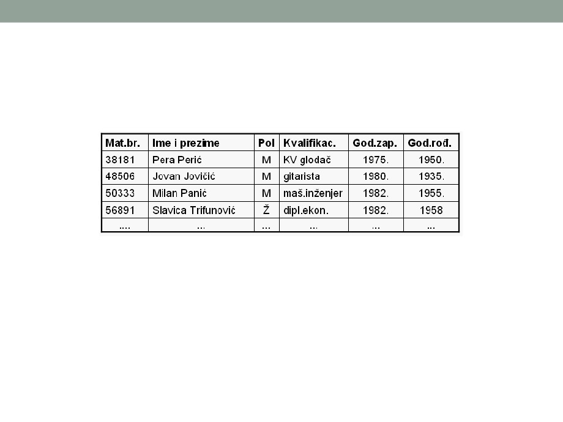
Relacioni model podataka
• Primjer: relacija RADNIK može da izgleda kao:
• Atributi za svaki red u relaciji (tabeli) imaju određene
vrijednosti, koje uzimaju iz odgovarajućih domena, tako da su
kolone u tabeli ustvari domeni odgovarajućih atributa.
• Broj domena nad kojima je relacija definisana odn. broj atributa
relacije ili broj kolona odgovarajuće tabele definiše red relacije.
• Tako razlikujemo relacije prvog reda ili unarne relacije (jedan atribut),
relacije drugog reda (binarne relacije - dva atributa) ili relacije n-tog
reda odn. n-arne relacije (n atributa).
Relacioni model podataka
• Razlikuju se i:
• nastupajući elementi relacije (pojedini element ili slog sadrži
vrijednost za svaki od atributa i to je red relacije ili n-torka relacije);
• ključ (atribut ili grupa atributa odn. složeni ključ koji ima različite
vrijednosti za svaki nastupajući element relacije - red tabele; u
tabeli na prethodnoj slici to je matični broj).
• Ključ relacije je primarni atribut ili grupa atributa (složeni
ključ koji ima različite vrijednosti za svaki nastupajući
element relacije, odn. red tabele; u prethodnoj tabeli to je
matični broj).
• Ključ relacije odn. primarni ključ se bira između svih
potencijalnih ključeva ili kandidata za ključ, a potencijalni
ključevi su oni atributi ili grupe atributa koji imaju različite
vrijednosti za svaki nastupajući element.
Relacioni model podataka
• Karakteristike:
• ne postoje jednaki redovi u tabelama;
• poredak redova nije važan;
• poredak kolona nije važan; pri tome svaka kolona ima svoje ime.
• sve vrijednosti u tabeli imaju "atomski" karakter tj. ne mogu se
razbiti na komponente bez gubljenja informacija.
• Dobre strane:
• jednostavnost i laka shvatljivost (pristupačan je za krajnjeg
korisnika);
• ima dobru teorijsku osnovu;
• široka primjena usled razvijenih komercijalnih sistema za
upravljanje bazom podataka.
• Zbog ovih karakteristika, relacioni model podataka je
najčešće korišćen.
Relacioni model podataka
• Postupak stvaranja relacionog modela:
• prevođenje dijagrama zavisnosti entiteta u inicijalni relacioni
dijagram;
• pridruživanje ili alociranje svakog identifikovanog atributa
odgovarajućoj relaciji;
• pregled i provjera relacionog dijagrama;
• kvantifikovanje modela podataka;
• kompletiranje definicije relacije veza i atributa.
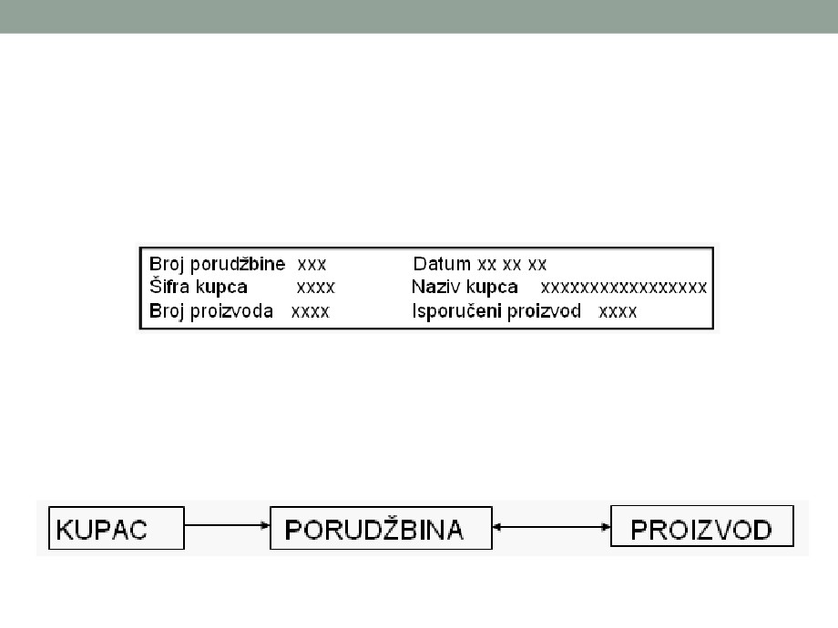
Relacioni model podataka - Primjer
• Pojednostavljena aplikacija upita o statusu porudžbina
• Polaz: pretpostavljena ekranska slika
• Identifikovani tipovi entiteta: KUPAC, PROIZVOD,
PORUDŽBINA (o njima su potrebni podaci).
• Dijagram zavisnosti entiteta:
Relacioni model podataka - Primjer
• U optimalnoj formi će se javiti relacije:
• PORUDŽBINA (Broj porudžbine, datum, šifra kupca);
• PROIZVOD (Broj proizvoda, naziv proizvoda, jedinična cijena
proizvoda);
• NARUČENI PROIZVOD (Broj porudžbine, Broj proizvoda, naručena
količina, isporučena količina);
• KUPAC (Šifra kupca, ime kupca).
• U grafičkom prikazu, relacije se, kao i tipovi entiteta,
predstavljaju pravougaonicima u koje se upisuje ime i primarni
ključ. Veze se prikazuju na sledeći način:
• veze tipa 1:1 i 1:c se predstavljaju linijama koje spajaju
pravougaonike;
• veza tipa 1:m se predstavlja linijom sa strelicom u onu stranu gde se
nalazi "m" tačka veze;
• veza tipa m:m između relacija ne postoji.
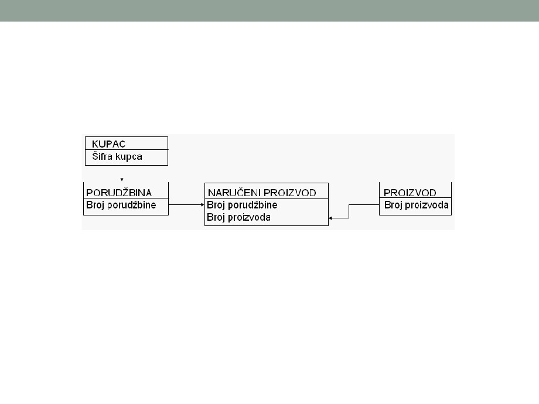
Relacioni model podataka - Primjer
• Relacioni dijagram za primjer:
Relacioni model podataka
•
Pravila za formiranje inicijalnog relacionog dijagrama na bazi dijagrama zavisnosti
entiteta:
• svaki tip entiteta se predstavlja relacijom čije ime je isto kao i ime entiteta; identifikator entiteta
postaje primarni ključ relacije;
• odnosi 1:1, 1:c i 1:m se predstavljaju vezama koje se kvantifikuju kao u dijagramu zavisnosti
entiteta;
• svaki odnos m:m iz dijagrama zavisnosti entiteta se predstavlja novom relacijom čiji je primarni
ključ sastavljen od identifikatora onih entiteta koji učestvuju u odnosima. Veza između nove
relacije i svake od relacija iz kojih je izvedena je tipa 1:m.
•
Ovako dobijeni dijagram se zove inicijalni relacioni dijagram. On ne sadrži druge
atribute sem primarnih ključeva.
•
Pridruživanje atributa odgovarajućim relacijama iz inicijalnog relacionog dijagrama
(normalizacija) - kada se atributi definišu, pridružuju se odgovarajućim relacijama.
To pridruživanje (alociranje) je uspešno izvedeno ako svaki posmatrani atribut
zavisi od:
• ključa,
• cijelog ključa,
• ničeg osim od ključa izabrane relacije.
•
To znači da su relacije normalizovane u odnosu na atribute. Ako to za neki atribut
nije slučaj, treba formirati novu relaciju pa je unijeti u dijagram. Normalizovana
odn. normalna forma je optimalna forma atributa.
Relacioni model podataka - Normalizacija
•
Normalizacija je proces koji pretvara inicijalni set relacija u optimalni skup koji se zove i
relacioni model.
•
Cilj normalizacije je da se eliminiše redundancija (radi pojednostavljenja ažuriranja) i da se
optimizuje mogućnost proširivanja.
•
Sam proces se sastoji od transformisanja inicijalne relacije u više drugih relacija, pri čemu
svaki atribut u svakoj relaciji zavisi samo od ključa.
•
Standardni koraci u procesu normalizacije su:
1. Prva normalna forma (1NF): Ukloniti atribute koji ne zavise od ključa, tj. mogu imati višestruke
vrijednosti za datu vrijednost ključa i formirati novu relaciju čiji ključ će biti sastavljen (konkatiniran) od
jednog ili više njenih atributa sa ključem originalne relacije
• Prva normalna forma ukida ponavljanje podataka u nenormalizovanim datotekama odn. segmentima
baze, izdvajanjem podataka koji se ponavljaju u posebne datoteke/tabele koje ostaju u vezi sa
osnovnom datotekom preko veznog podatka. Takođe se slogovi varijabilne dužine prevode u slogove
fiksne dužine.
2. Druga normalna forma (2NF): Ukloniti atribute koji ne zavise od celog ključa i formirati novu relaciju čiji
ključ će biti minimalni deo ključa originalne relacije i od koga će zavisiti svaki od uklonjenih atributa
• Druga normalna forma zadovoljava uslove 1NF i uvodi punu funkcionalnu zavisnost svih neključnih
podataka od primarnog ključa.
3. Treća normalna forma (3NF): Ukloniti atribute koji zavise od drugih atributa u relaciji izuzev od ključa i
formirati novu relaciju čiji ključ će biti onaj atribut u originalnoj relaciji od koga zavise svi uklonjeni atributi
• Treća normalna forma zadovoljava uslove 2NF i ukida bilo kakvu međuzavisnost neključnih podataka.
4. i 5. normalna forma (rjeđe se koriste, i to u slučajevima kada 3NF ne može da završi normalizaciju; 4NF
je značajna za situacije gdje ključni podatak ima višeznačne zavisnosti, koje se mogu do kraja eliminisati
tek svođenjem na 5NF).
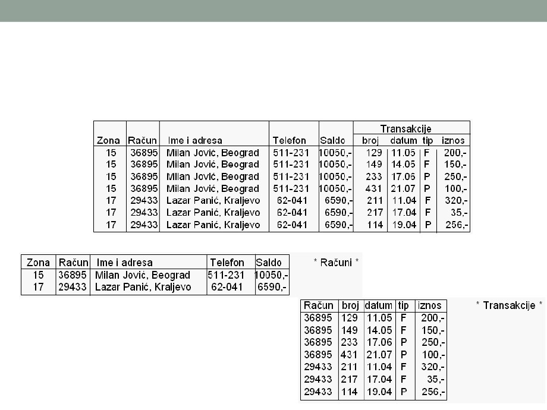
Normalizacija - primjer
• Sirovi (nenormalizovani) podaci:
• 1. normalna forma (1NF):
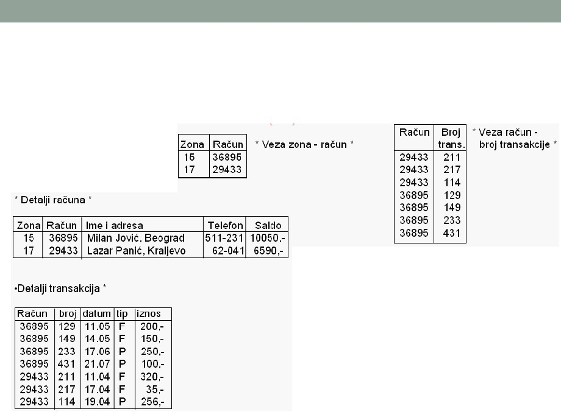
Normalizacija - primjer
• 2. normalna forma (2NF):
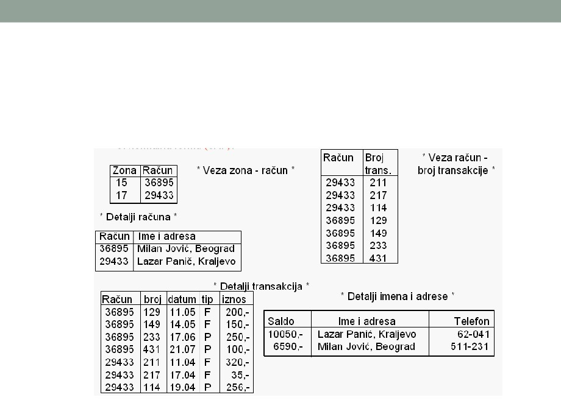
Normalizacija - primjer
• 3. normalna forma (2NF):
Pregled i provjera relacionog dijagrama
• Kada su svi atributi iz poslovnog sistema identifikovani i
pridodati odgovarajućim relacijama, treba još jednom izvršiti
provjeru modela.
• Pri tome može da se desi da normalizovane relacije sadrže
atribute sa nultim vrijednostima. To se dešava onda kada
atribut trenutno nema vrijednost ili nema vrijednost za određeni
period. Tada treba formirati podtip entiteta, pa se formira nova
relacija ili se dvije relacije spajaju u jednu, gdje će neki atribut
imati nultu vrijednost.
• Takođe se mogu pojaviti relacije koje osim primarnog ključa ne
sadrže druge atribute. Takve relacije treba ukloniti iz modela,
ali pri tome treba voditi računa da li takve relacije predstavljaju
odnose tipa m:m. Takve relacije ne treba uklanjati i ako sadrže
samo komponente primarnog ključa, jer nisu redundantne.
• Provjeru modela treba izvršiti u smislu otkrivanja i uklanjanja
redundantnih veza.
Relacioni model podataka
• Osim samog relacionog dijagrama koji predstavlja jednu komponentu
modela podataka, treba formirati i odgovarajuću dokumentaciju koja
sadrži tačnu definiciju relacija, veza i atributa.
• Redoslijed odvijanja aktivnosti pri formiranju modela podataka:
• Formirati relacije za svaki tip entiteta i za svaki odnos m:m i to dokumentovati
listom entitet / relacija;
• Dodeliti atribute odgovarajućim relacijama;
• Identifikovati primarne, alternativne i strane ključeve za svaku relaciju;
• Normalizovati svaku relaciju;
• Provjeriti atribute sa nultim vrijednostima i, ako je potrebno, kreirati nove
relacije;
• Napraviti listu atributa, odn. unijeti atribute u odgovarajuće obrasce;
• Nacrtati relacioni dijagram;
• Ukloniti redundantne veze;
• Dokumentovati veze, tj. unijeti ih u odgovarajuće obrasce;
• Provjeriti i obezbediti međusobnu konzistentnost relacionog dijagrama,
definicija veza i strukture ključa.
Relacioni model podataka
• Osim samog relacionog dijagrama koji predstavlja jednu komponentu
modela podataka, treba formirati i odgovarajuću dokumentaciju koja
sadrži tačnu definiciju relacija, veza i atributa.
• Redoslijed odvijanja aktivnosti pri formiranju modela podataka:
• Formirati relacije za svaki tip entiteta i za svaki odnos m:m i to dokumentovati
listom entitet / relacija;
• Dodeliti atribute odgovarajućim relacijama;
• Identifikovati primarne, alternativne i strane ključeve za svaku relaciju;
• Normalizovati svaku relaciju;
• Provjeriti atribute sa nultim vrijednostima i, ako je potrebno, kreirati nove
relacije;
• Napraviti listu atributa, odn. unijeti atribute u odgovarajuće obrasce;
• Nacrtati relacioni dijagram;
• Ukloniti redundantne veze;
• Dokumentovati veze, tj. unijeti ih u odgovarajuće obrasce;
• Provjeriti i obezbediti međusobnu konzistentnost relacionog dijagrama,
definicija veza i strukture ključa.
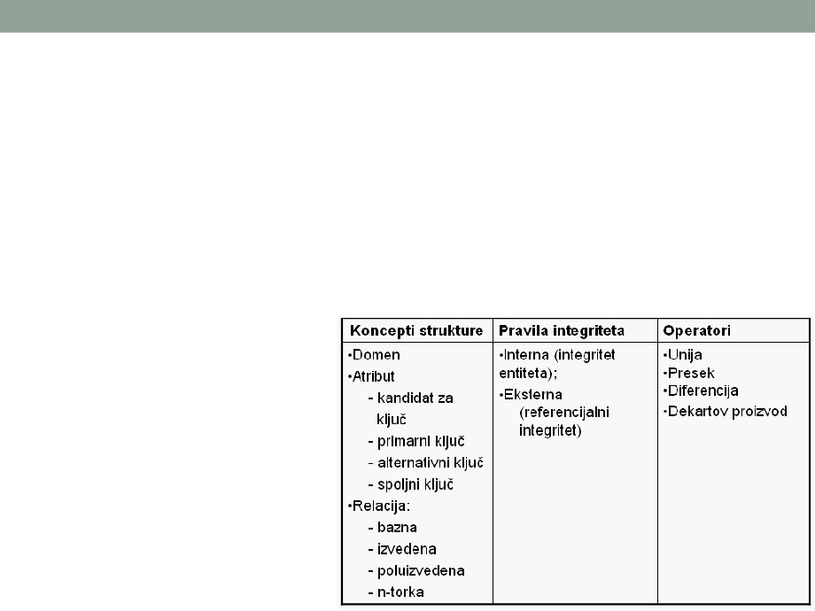
Relacioni model podataka
• Osnovni koncepti relacionog modela su struktura, ograničenja
(pravila integriteta) i operatori
• Model koji sadrži sve koncepte date u ovoj tabeli je potpuni
relacioni model.
• Relacioni model koji podržava samo koncepte strukture i
pravila integriteta a nema skup operatora naziva se tabelarni
odn. semirelacioni model podataka.
Prošireni relacioni model podataka
• U periodu 1970. - 1979. razvijen je čitav niz modela
podataka, sa sve složenijim i semantički sve bogatijim
konceptima, razvijajući se u pravcu 2. generacije modela
podataka.
• Dr E.F. Codd je 1979. god. neke od novih koncepata
ugradio u svoj prošireni relacioni model podataka. Novi
elementi u proširenom relacionom modelu su:
• Uključivanje nula vrijednosti i definisanje novog skupa operatora;
• Uvođenje ključeva - surogata da bi se napravila razlika između
entiteta i njihovih sintaksnih identifikatora (imena); svi primarni i
spoljni ključevi su surogati;
• Uvođenje različitih vrsta domena i relacija sa ciljem da se obuhvate
novi semantički koncepti koji su se u međuvremenu pojavili u
drugim modelima; npr. E - domen (E - relacija) je domen svih
mogućih vrednosti surogata - unarna relacija.
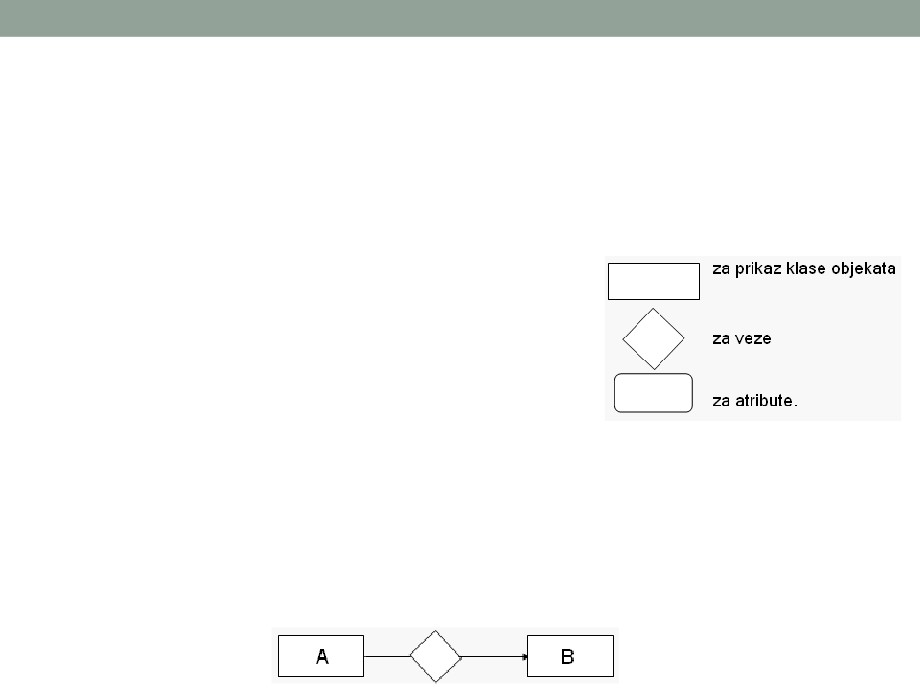
Model objekti-veze (ER model)
• Ovaj model je razvio Piter Čen sa MIT-a pod nazivom ERA
(Entity - Relationship - Atribute: model objekti - veze - atributi, ili
ER: model objekti-veze ). ER modeli su:
• jednostavni;
• pregledni;
• laki za primjenu i komuniciranje;
• bogati semantikom;
• nezavisni ni od jednog konkretnog SUBP;
• laki za prevođenje u bilo koji od ranije opisanih modela (hijerarhijski,
mrežni ili relacioni).
• Za grafički prikaz modela se koristi ER dijagram. Dijagramom
se prikazuju objekti (klase objekata), odnosno entiteti, njihovi
atributi i veze među entitetima. Koriste se sledeći standardni
simboli (na slici). Simboli se spajaju linijama
Prošireni model objekti-veze
• Postoji i prošireni model objekti veze, kod koga se
prikazuju samo binarne veze. To znači da svaki tip veze
između dva tipa objekata, E1 i E2 definiše dva tipa
preslikavanja, tj. E1 --> E2 i inverzno, E2 --> E1.
• Jedna od bitnih karakteristika veza između objekata je
kardinalnost preslikavanja.
• Kardinalnost preslikavanja E1 u E2 definiše se parom (DG, GG)
gde je DG donja granica i predstavlja minimum tj. najmanji broj
pojavljivanja tipa objekta E2 za jedno pojavljivanje E1, dok je GG
gornja granica i predstavlja najveći broj pojavljivanja tipa objekta
E2 za jedno pojavljivanje E1. Donja granica može imati vrijednost
0, 1 ili neki cijeli broj veći od 1. Gornja granica (GG) može imati
vrijednost 1, neki cio broj veći od 1 ili nepoznat cio broj veći od 1,
koji se označava sa M. U jednom preslikavanju mora biti DG < GG.
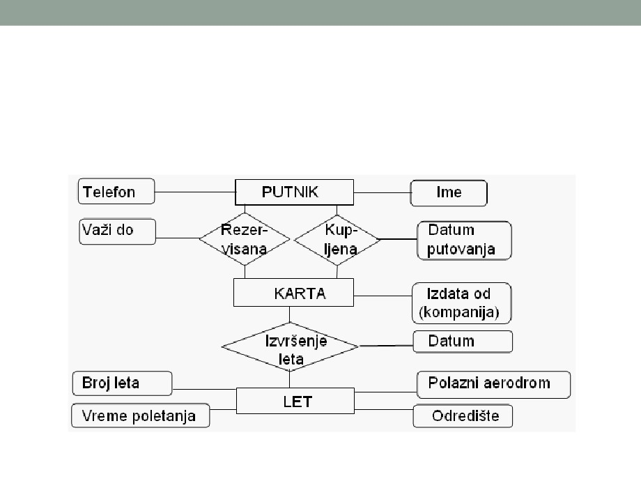
ER model
• Primjer: kupovina avionske karte
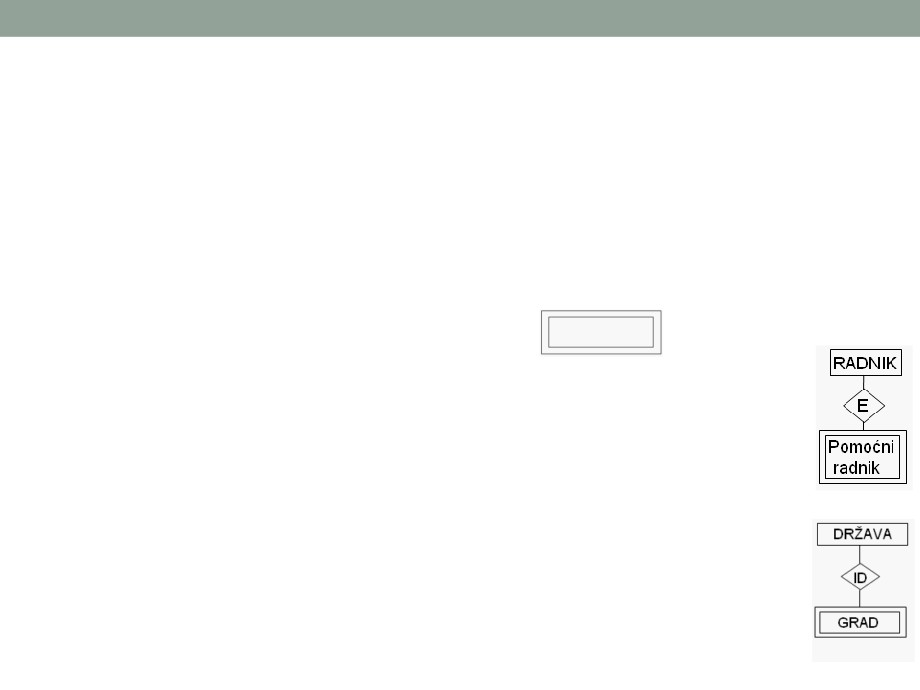
ER model
• Pored navedenih koncepata, u ER modelu se uvodi i:
• vrsta (klasa) slabog entiteta - vrsta entiteta koji je na neki način
zavisan od drugog entiteta i pojavljivanje tog "slabog" entiteta
nema neko značenje, tj. ne predstavlja ni jedan objekat od interesa
u realnom sistemu, već dobija značenje kad se poveže sa nekim
drugim tzv. nadređenim entitetom (simbol
)
• vrsta (klasa) specijalne veze - zavisnost slabog entiteta se opisuje
preko tipa specijalne veze. Postoji više vrsta specijalne veze:
• egzistencijalna zavisnost (E) javlja se u onim slučajevima kada
postojanje entiteta zavisi od nekog drugog entiteta. Npr:
• identifikaciona zavisnost (ID) se javlja u slučaju kada se klasa entiteta
ne može identifikovati skupom njegovih atributa, već se mora koristiti
atribut identifikator nekog drugog entiteta. Npr. entitet GRAD sa
atributom IME. Da bi ovaj entitet bio pravilno identifikovan, ponekad je
potrebno da bude vezan za državu.
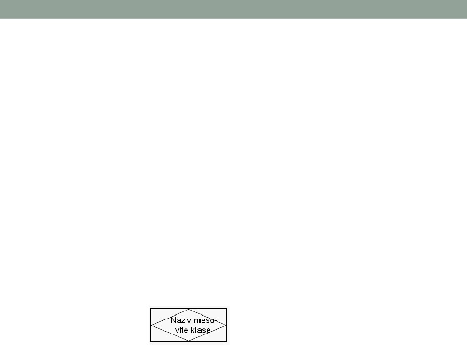
ER model
• I egzistencijalna i identifikaciona zavisnost znače da slabi
entitet ne može da postoji bez nadređenog entiteta, tj.
entiteta koji ga identifikuje.
• Pored egzistencijalnih i identifikacionih zavisnosti, uvodi
se i pojam kombinovane veze, a to je slučaj kad postoje
istovremeno obje navedene zavisnosti.
• Uopšte, uvođenje slabih entiteta predstavlja određenu
apstrakciju (apstrakcija - kontrolisano uključivanje detalja
da bi se predstavila opšta svojstva objekata).
• Pored pomenutih koncepata, u poslednje vreme se uvodi i
pojam mješovita klasa entitet - veza i njome se
predstavlja veza između relacija (veza). To se predstavlja
simbolom:
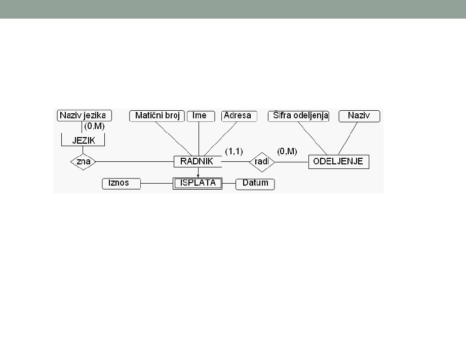
ER model - Pimjer
• Isplata radnika
• Upisane su DG i GG, tako da je kod veze "radi" DG = 1 i GG = 1, što
znači da jednom pojavljivanju entiteta RADNIK odgovara najmanje jedno
i najviše jedno pojavljivanje enteta ODELJENJE, tako da je veza (1,1).
Jedan radnik radi u jednom odeljenju. Obrnuto, za slučaj ODELJENJE --
> RADNIK, DG = 0 i GG = M (u jednom odeljenju može najmanje da
nema radnika (0) ili da najviše radi mnogo radnika (M)).
• Takođe je dat i slabi entitet ISPLATA. Ovaj entitet sa atributima "Datum" i
"Iznos" sam nema nekog značenja, ali kada se pojavljivanja entiteta
ISPLATE daju za svako pojavljivanje entiteta RADNIK, tada dobija
značenje.
ER model - metodologija modelovanja
•
Prva faza - ANALIZA ZAHTJEVA (identifikacija kolona, odnosno
atributa - karakteristika entiteta). To podrazumijeva jasno i precizno
definisanje zahtjeva za informacijama. Zahtjevi se lako definišu na
osnovu dobro urađene analize funkcija realnog sistema.
•
Druga faza - NALAŽENJE GLOBALNOG MODELA PODATAKA
(grupisanje kolona u entitete - definisanje tipova entiteta, veza i
atributa). Entiteti, veze i njihovi atributi se prikazuju grafički. Dobijeni
globalni model služi za komunikaciju sa korisnikom. Nakon toga se
dodaju i drugi semantički detalji i crta se konačni dijagram.
•
Treća faza - IDENTIFIKACIJA PRIMARNIH KLJUČEVA (za svaki
entitet treba ispitati da li neka od kolona ima jedinstvenu vrijednost za
svaki nastupajući element tog entiteta - ako postoji, proglasiti je za
primarni ključ).
•
Četvrta faza - IDENTIFIKACIJA STRANIH KLJUČEVA (strani ključevi
su kolone čije vrijednosti povezuju entitet sa primarnim ključem nekog
drugog entiteta. Identifikacija stranih ključeva se sastoji u poređenju
primarnih ključeva i kolona kod drugih entiteta).
ER model
• Analiza veza među entitetima
• Tipovi veza mogu biti 1:1, 1:c, 1: m i m:m.
• Ako se uoči veza tipa m:m, treba je eliminisati uvođenjem novog
entiteta koji je u vezi tipa 1:m sa oba entiteta koji su bili u vezi tipa
m:m. Taj postupak znači normalizaciju modela podataka, po
pravilima:
•
1. pravilo: samo atomske vrijednosti (nijedna kolona da ne sadrži složene
vrednosti niti da predstavlja grupu koja se ponavlja; npr. ako u tabeli treba imati
podatke o svim vrstama isplata radniku ili o brojevima telefona komitenta, bolje
je napraviti novu tabelu od ključa i po jednog broja telefona / vrste isplate).
•
2. pravilo: zavisnost od cijelog primarnog ključa (npr. u tabeli koja sadrži ključ =
broj indeksa + šifra predmeta i atribut ime studenta, ime studenta zavisi samo
od broja dosijea a ne i od šifre predmeta, pa ga treba eliminisati).
•
3. pravilo: zavisnost samo od primarnog ključa (kolone u tabeli treba da zavise
samo od primarnog ključa; npr. tabela koja sadrži: šifru predmeta, naziv
predmeta, šifru studijske grupe i naziv studijske grupe treba da se podeli u 2
tabele).
ER model
•
Prevođenje ER modela u druge - da bi ER modeli mogli da se
realizuju odn. da se projektuje baza podataka, moraju da se
prevedu na neki od komercijalnih modela tj. na one modele za
koje postoje komercijalni SUBP (hijerarhijski, mrežni ili
relacioni).
•
Ako se želi da se ER model realizuje pomoću relacionog SUBP,
mora se transformisati u skup tabela (relacija) koje su u trećoj
odn. četvrtoj normalnoj formi. Za takva prevođenja postoje
utvrđeni postupci, kao što su:
• Čenov postupak - sastoji se iz:
• definicija funkcionalne zavisnosti između atributa;
• normalizacija tipova entiteta;
• normalizacija tipova veza.
• postupci analize relacija;
• postupci sinteze relacija i dr.
•
Zbog mogućnosti prevođenja u druge modele, kaže se da ER
model predstavlja generalizaciju tih modela.
ER model - prevođenje u relacioni model
•
Prevođenje ER modela u relacioni model se izvodi tako što se dio
strukture ER modela, odnosno dijagram objekti-veze (DOV), predstavlja
relacionom šemom, a ograničenja, operacije i dio strukture ER modela se
predstavljaju operacijama za očuvanje integriteta definisanja nad
relacionim modelom.
•
Pravila za objekte (entitete):
• Svaki objekat iz DOV postaje šema relacije, ime tipa entiteta postaje ime šeme
relacije, obilježja objekta su obilježja šeme relacije. Za osnovne objekte identifikator
objekta (entiteta) postaje primarni ključ šeme relacije.
• Svaki ″slab″ objekat takođe postaje šema relacije. Ime tipa objekta postaje ime
šeme relacije. obilježja objekta su obilježja šeme relacije. Identifikator nadređenog
objekta postaje jedno od obilježja šeme relacije koja odgovara ″slabom″ objektu.
Identifikator slabog objekta čine identifikator nadređenog objekta i obilježja ″slabog″
objekta koja jedinstveno identifikuju pojavljivanje ″slabog″ objekta u okviru
pojavljivanja njemu nadređenog objekta.
• Objekat nadtip (generalizovani tip objekta) postaje šema relacije. Ime nadtipa
postaje ime šeme relacije. Obilježja nadtipa su obilježja šeme relacije. Identifikator
nadtipa postaje ključ šeme relacije.
• Objekat podtip takođe postaje šema relacije. Ime podtipa postaje ime šeme relacije.
Obilježja podtipa su obilježja šeme relacije. Identifikator nadtipa predstavlja ključ
šeme relacije.
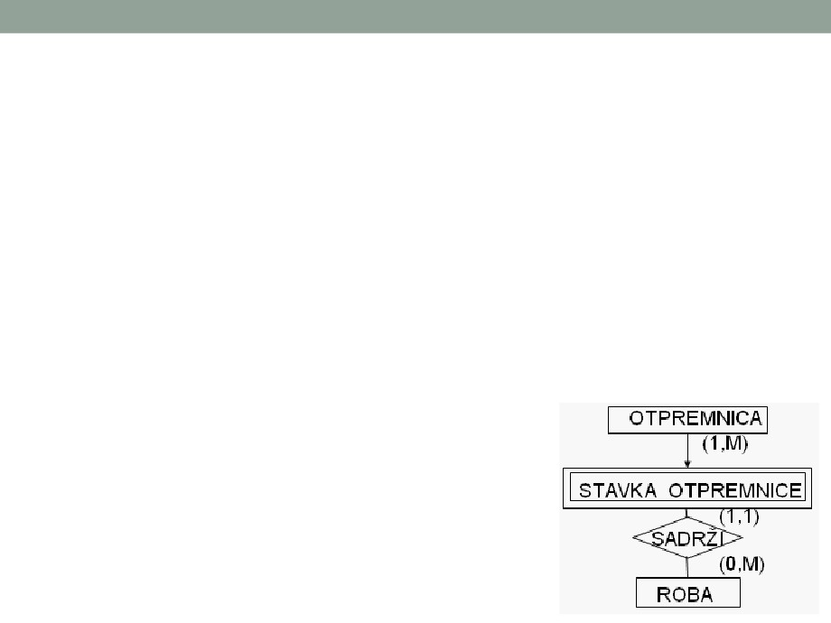
ER model - prevođenje u relacioni model
• Pravila za prevođenje veza među objektima:
• Veze tipa (1:1)(0:M) ne postaju posebne šeme relacije, već
identifikator objekta za koji je GG=M postaje obilježja objekta za
koji je GG=1.
• Veze tipa (0:1)(1:1) sa objektima koji su u vezi prevode se u dvije
šeme relacije (za svaki objekat po jedna šema relacije i identifikator
jednog objekta postaje obilježje drugog objekta). Bolje je
predstavljanje spoljnjim ključem u šemi relacije objekta sa strane
(1:1).